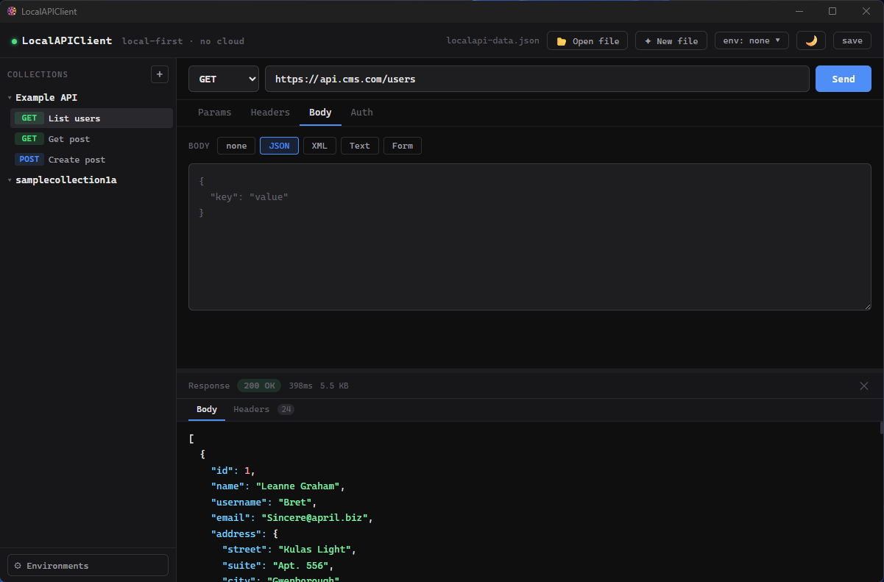

A fast, privacy-first API client. No cloud. No sync. Just local.

Version: v1.0.0
Open Downloads Folder| Platform | File |
|---|---|
| 🪟 Windows | LocalAPIClient_*_x64-setup.exe.zip |
| 🍎 macOS | LocalAPIClient_*_universal.dmg.zip |
| 🐧 Linux | local-api-client_*_amd64.deb.zip / .AppImage.zip |
📦 Step 1: Download ZIP
📂 Step 2: Extract files
▶️ Step 3: Run installer (.exe / .dmg)
⚠️ Windows may show a security warning. Click "More info" → "Run anyway".